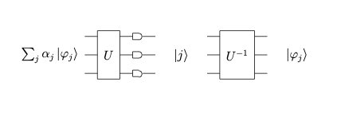
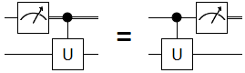
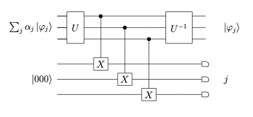
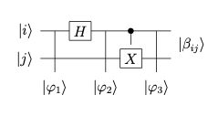
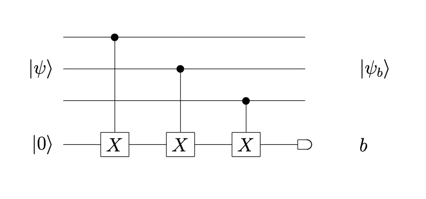

Mediciones con Circuitos Cuanticos¶
En esta seccion vamos a explorar como utilizar circuitos cuánticos para describir e implementar los diferentes tipos de mediciones cuánticas descritas durante las primeras sesiones del curso. Especificamente, el tipo de mediciones que vamos a explorar es el conjunto de mediciones que se ejecutan con respecto a la base estandar.
Durante los primeros capitulos se definió la base estandar como la base formada por los vectores ortogonales |0> y |1>. Suponiendo que tenemos n set universal de compuertas cuánticas, asi como la habilidad de ejecutar una medicion en cualquier cubit en l abase estandar, podemos definir un estado cuantico arbitrario como \(|\Psi> = \alpha_{0}|0> + \alpha_{1}|1>\). La probabilidad de obtener el estado \(|b>\) esta dada por la expresion \(|\alpha_{b}|^{2}\).
Tambien definimos los operadores de proyeccion \(P_{0}=|0><0|\) y \(P_{1}=|1><1|\) que satisfacen la condicion \(P_{0}+P_{1} = I\). Tambien podemos considerar el operador de proyeccion u “observable”:
\( M = 0P_{0} + 1P_{1} \)
donde 0 y 1 son los valores caracteristicos del operador. Cuando medimos esta observable M, la pobabilidad de obtener el valor caracteristico b es:
\( Pr(b) = <\Phi|P_{b}|\Phi> = |\alpha_{b}|^{2} \)
y despues de la medicion, el sistema se encuentra en el estado
\( \frac{P_{b}|\Phi>}{\sqrt{Pr(b)}} = \frac{\alpha_{b}}{|\alpha_{b}|}|b> = |b> \)
Valor esperado o medio de una observable¶
Si asociamos el valor caracteristico b con el resultado |b>, entonces el valor esperado o medio tiene la siguiente forma:
\( \sum_{b} b Pr(b) = \sum_{b}b <\Phi|P_{b}|\Phi> = <\Psi|(\sum_{b}bP_{b})|\Psi> \)
\( = Tr\left(<\Psi|(\sum_{b}bP_{b})|\Psi>\right) = Tr(M|\Psi><\Psi|) \)
Mediciones de tipo Von Neumann¶
Las mediciones proyectivas son muy utilizadas en la computacion y comunicacion cuanticas. En particular, los protocolos de codificacion superdensa y teleportacion cuantica estan basados en mediciones denominadas de Von Neumann. Para entender mejor este tipo de mediciones, empezamos asumiendo de nuevo que tenemos un set universal de compuertas cuanticas y la capacidad de medir cada uno de los cubits en nuestro sistema, en la base estandar. Sea un estado \(|\Psi>\) que expresado en la base ortonormal \(|\psi>\) tiene el desarrollo:
\( |\Psi> = \sum_{x\in \{0,1\}^n}\alpha_{x}|x> \)
Una medicion de Von Neumann de \(|\Psi>\) con respecto al conjunto de bases \(|x>\), descritos por los proyectores ortogonales \(\left(|x><x|\right)\) dara como resultado “x” y el sistema quedará en el estado \(|x>\) con probabilidad \(|\alpha_{x}|^{2}\).
Mediciones Parciales¶
Si unicamente ejecutamos una medicion en el primer cubit, la probabilidad de encontrar los otros cubits en el estado |0> sigue teniendo la forma:
\( p_{0} = \sum_{x\in 0 \{0,1\}^{n-1}}|\alpha_{x}|^{2} \)
Los cubits restantes (n-1) se encuentran en el estado renormalizado:
\( p_{0} = \sum_{x\in 0 \{0,1\}^{n-1}}\frac{\alpha_{x}}{\sqrt{p_{0}}}|x> \)
que es muy similar al teorema de Bayes. Esta medicion parcial corresponde a medir la observable
\( M = 0|0><0| \otimes I^{n-1} + 1|1><1|\otimes I^{n-1} \)
Entonces, una medicion de tipo Von Neumann es un tipo especifico de medicion proyectiva. Si empezamos de una base normal \(\{|\psi_{k}>\}\) y ejecutamos una medicion de tipo Von Neumann en el estado \(|\Phi> = \sum_{k}\alpha_{k}|\psi_{k}>\) con respecto a dicha base, obtendremos el estado \(|\psi_{k}>\) con probabilidad
\( |\alpha_{k}|^{2} = Tr\left(|\psi_{k}><\psi_{k}||\Phi><\Phi|\right) \)
Implementacion fisica de mediciones de tipo Von Neumann¶
Normalmente, un dispositivo fisico es capaz de ejecutar una medicion con respecto a la base estandar en los cubits individuales, pero se puede utilizar un circuito cuantico que registra la medicion de Von Neumann descrita por medio de un registro clasico de cubits multiples. Primero se construye un circuito que realiza la transformacion unitaria:
\( U|\psi> = |j> \)
en esta expresion, el indice j se supone en n-bit binario (es decir, 0 o 1) y |j> es el estado de la base computacional de n-cubits correspondiente a j. Entonces, podemos decir que el operador \(U\) hace el cambio de base de la base \(|\psi>\) a la base computacional. Por lo tanto, para un estado arbitrario \(\sum_{j}\alpha_{j}|\psi_{j}>\), utilizamos un circuito cuantico para ejecutar el cambio de base mediado por el operador U y despues ejecutamos una medicion el registro clasico (en este caso, \(|j>\)) en la base computacional. Finalmente se aplica el cambio de base inverso, mediado por el operador \(U^{-1}\) (reemplazando cada compuerta u operador por su inverso). El circuito completo se muestra en la siguiente figura:

Principio de la medida diferida¶
“Una medida en una linea de un cubit, seguida de operaciones clasicamente controladas en otros cubits, que estan controlados por los resultados de la primera medida, es equivalente a las compuertas cuanticas controladas correspondientes con una medida al final de la linea”.

Los dos circuitos en el diagrama superior son equivalentes. En uno, la medicion ocurre antes de la aplicacion de una operacion, y en otro ocurre despues de esta. En otras palabras, es un principio de computacion cuantica que afirma que retrasar las mediciones al final de la computacion no afecta a la distribucion de probabilidades del estado final. Esto es posible porque la medicion conmuta con los operadores. Este principio tiene aplicaciones con el proposito de:
Reducir las compuertas cuanticas complejas a operaciones mas simples,
Realizar operaciones utilizando un numero menor de cubits.
Aplicando este principio de medicion diferida, alternativamente, es posible utilizar una estrategia en la que no se mide el estado intermedio en la base computacional. En cambio, se “copia” la informacion del sistema en el que estamos interesados, a un registro clasico de tipo ancilla y despues ejecutamos una medicion en la base estandar. Esta idea se puede visualizar en el siguiente diagrama:

En este circuito se registran los cubits en los cables inferiores que son medidos luego en la base computacional.
Ejemplo: Estados de Bell¶
Como ejemplo de cambio de base U vamos a suponer que queremos implementar una medicion de tipo Von Neumann en un estado formado por dos cubits, con respecto a la base ortonormal formada por los estados de Bell:
\( |\beta_{00}> = \frac{1}{\sqrt{2}}(|00> + |11>) \)
\( |\beta_{01}> = \frac{1}{\sqrt{2}}(|01> + |10>) \)
\( |\beta_{10}> = \frac{1}{\sqrt{2}}(|00> - |11>) \)
\( |\beta_{11}> = \frac{1}{\sqrt{2}}(|01> - |10>) \)
Esta base se conoce como base de Bell y sus estados como estados de Bell (tambien llamados pares EPR). Un circuito que realiza el cambio de base de la base computacional a la de Bell se muestra en la figura siguiente:

Es importante mencionar, que el principio de reversibilidad implica que para hacer un cambio de base de la base de Bell a la base estandar, simplemente basta con ejecutar el circuito del diagrama anterior en orden inverso. Para verificar este algoritmo, supongamos que la entrada al circuito sea el estado de la base computacional \(|\psi_{1}>=|00>\). Despues de la compuerta de Hadamard, el estado es:
\( |\psi_{2}>=\frac{1}{\sqrt{2}} (|0> + |1>)|0> =\frac{1}{\sqrt{2}} (|00> + |01>) \)
Donde hemos sido muy cuidadosos de mantener el orden de los cubits. Despues, la compuerta control-NOT transforma \(\psi_{2}\) en el siguiente estado:
\( |\psi_{3}> = \frac{1}{\sqrt{2}} (|00> + |11>) \)
y por lo tanto, tenemos que \(|\psi_{3}> = |\beta_{00}>\). De esta manera, verificamos que el circuito ejecuto correctamente el cambio de base en el estado de entrada \(|00>\). De manera similar, el mismo circuito ejecuta el cambio de base en los otros tres estados posibles en la base computacional, |01>, |10>, y |11>, transformandolos en \(|\beta_{01}>,|\beta_{10}>\) y \(|\beta_{11}>\), respectivamente.
Mediciones proyectivas incompletas¶
Las mediciones proyectivas incompletas y mas importante, su implementacion, se volvera relevante para los algoritmos de correccion de errores. Como ejemplo de una medicion proyectiva incompleta, exploraremos la medición de paridad. Los proyectores de paridad corresponden a los opearadores \(P_{0} = |0><0|\) y \(P_{1} = |1><1|\). De esta manera, cualquier estado de entrada, \(|\Psi> = \sum_{x}\beta_{x}|x>\) se puede expresar como \(|\Psi> = \alpha_{0}|\Psi_{0}>+\alpha_{1}|\Psi_{1}>\), donde
\( \alpha_{i} = \sqrt{<\Psi|P_{i}|\Psi>} \)
y por lo tanto, \(|\Psi_{i}> = \frac{P_{i}|\Psi>}{\alpha_{i}}\). De esta manera, una medición de paridad resultará en 0 y el estado \(|\Psi_{0}\) con probabilidad \(|\alpha_{0}|^{2}\) y el estado \(|\Psi_{1}>\) con probabilidad \(|\alpha_{1}|^{2}\). Regresando al ejemplo de implementacion de una medición proyectiva, el siguiente circuito calcula la paridad de estados en un sistema de 3-cúbits:

En este diagrama, la medición de cada uno de los 3 cúbits se ejecuta por medio de las compuertas de tipo CNOT, produciendo el estado \(|\Psi_{b}>\) como estado de salida con probabilidad \(|\alpha_{\beta}|^{2}\) con \(b=0,1\).